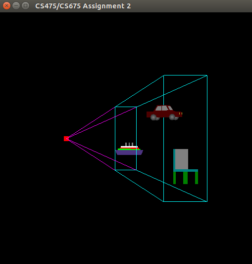
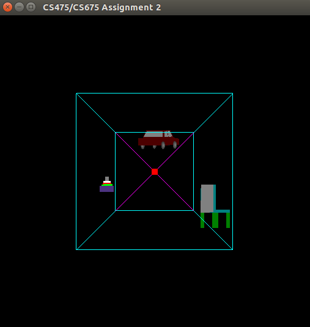
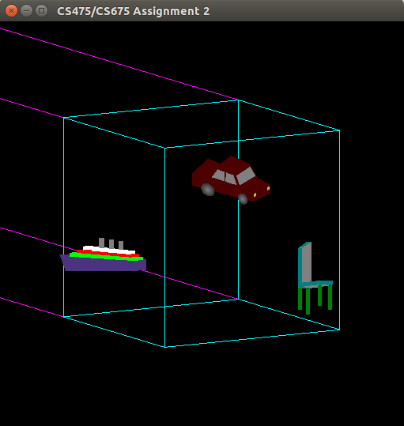
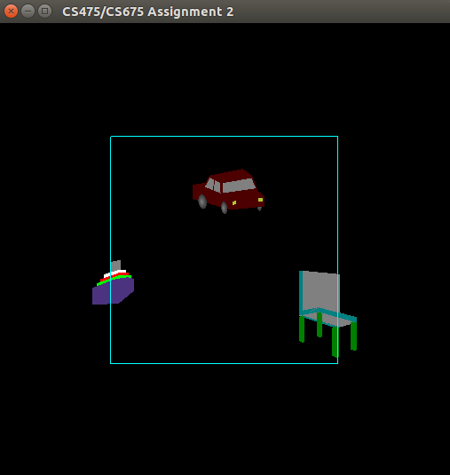
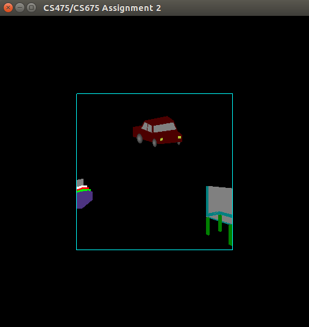

Modelling-Viewing Pipeline : Viewing
The images of the models in various coordinate systems:

WCS

VCS

CCS
Features and Instructions:
Run the Makefile using make command, to get the executable "assign02".
Using the command ./assign02 a window appears where the models are loaded from "myscene.scn" file.
Pressing 1, 2, 3, 4 will help us to view models in VCS, CCS, NDCS, DCS respectively.
The keys "D, A, S, W, E, Q" allow rotations along the positive and negative Y, X and Z axis respectively of the camera.
The key "R" helps to nullify all the applied rotations to the camera (for convenience).

CCS without clipping

CCS with clipping
Clipping
Clipping is implemented in 3D in CCS using Cohen-Sutherland algorithm
Pressing 5, 6, 7 will help us to view clipped models in CCS, NDCS, DCS respectively.